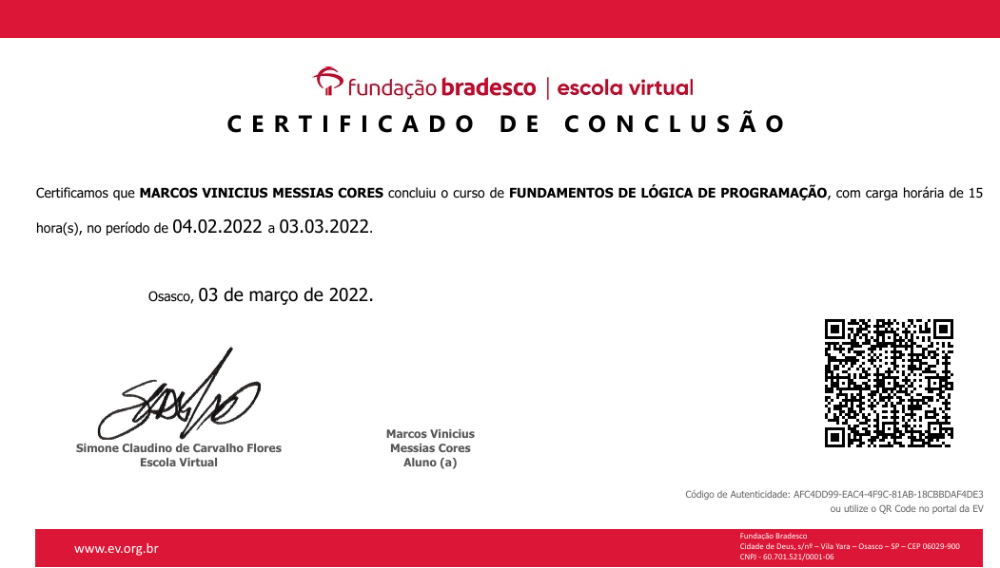
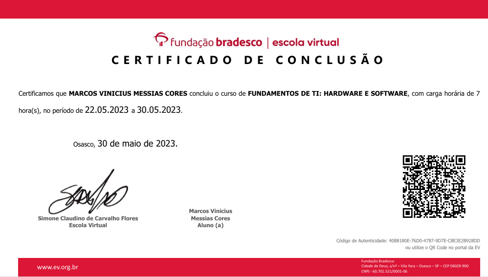
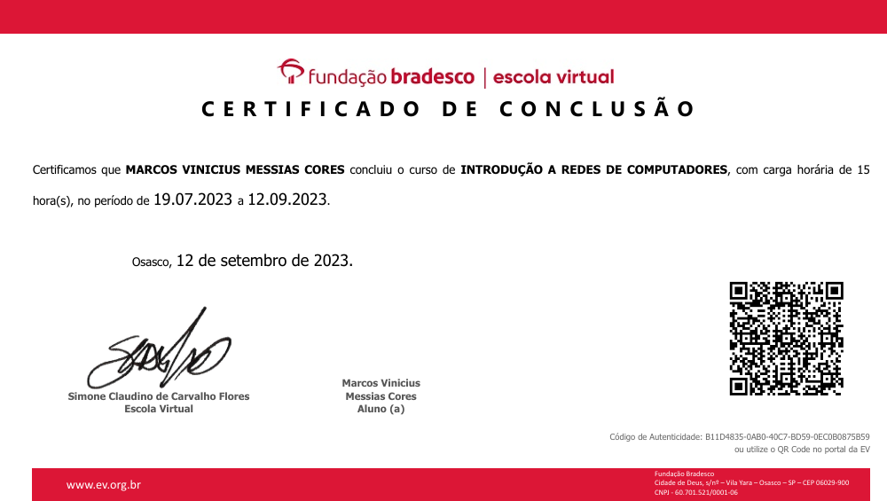
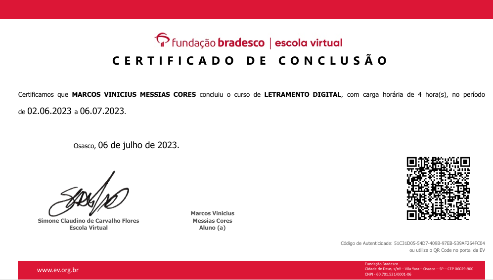
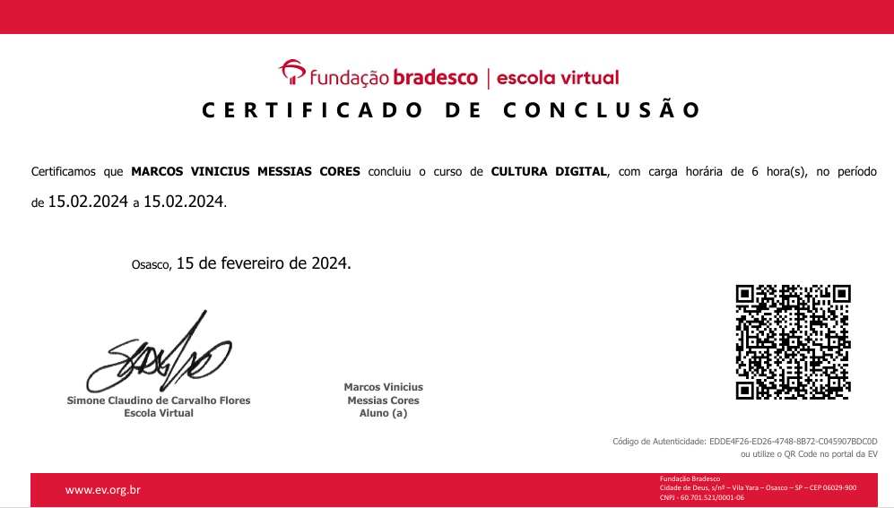
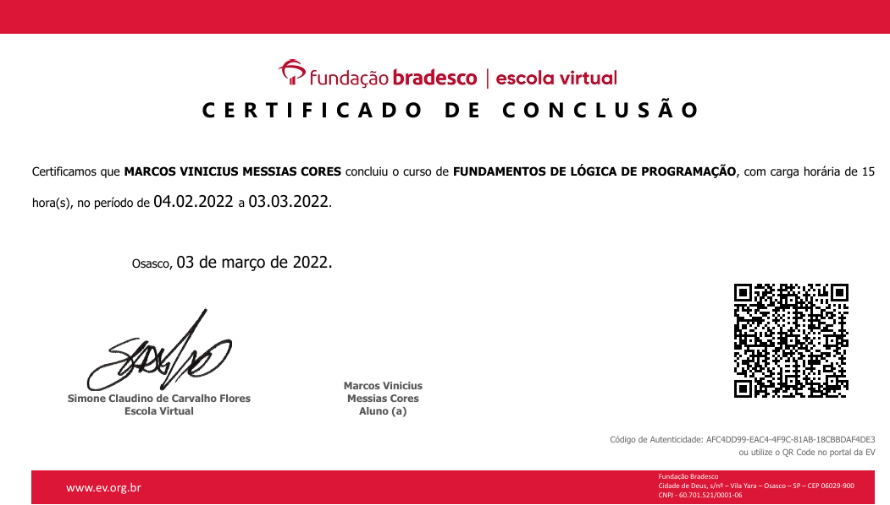
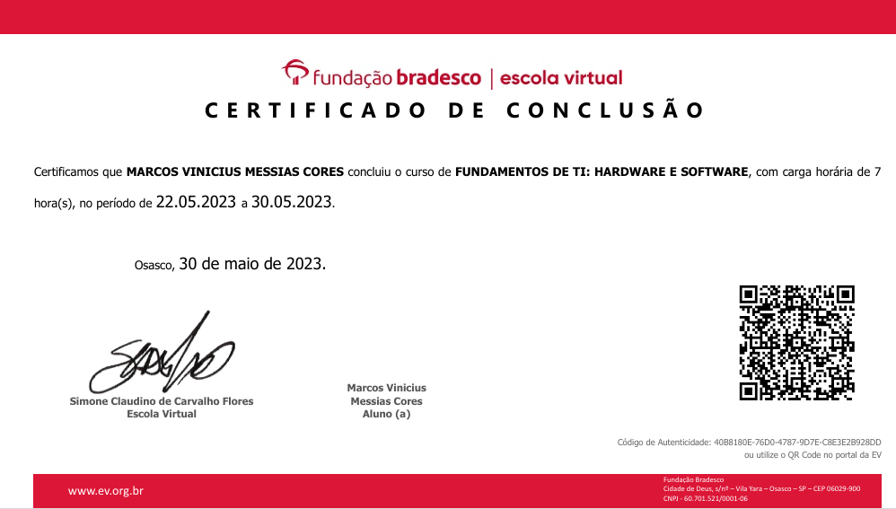
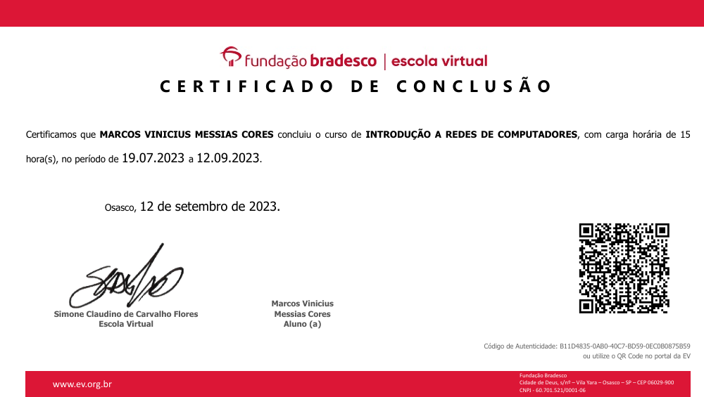
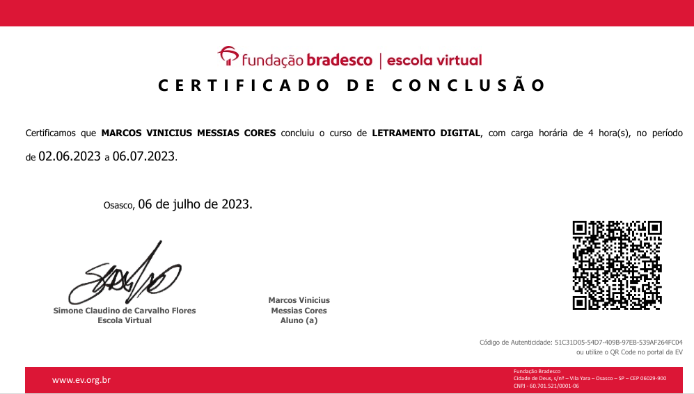
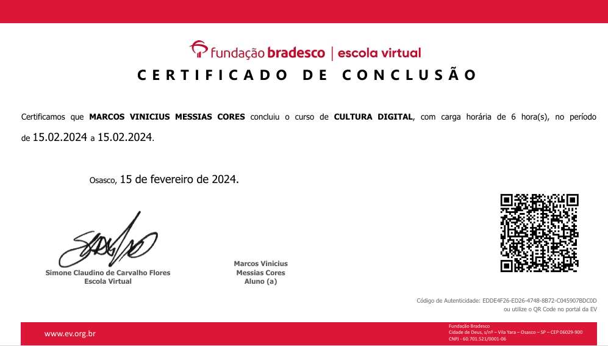

Comunicação
Habilidade para transmitir ideias claramente, tanto oralmente quanto por escrito.
Trabalho em Equipe
Capacidade de colaborar eficientemente com outras pessoas para alcançar objetivos.
Resolução de Problemas
Habilidade para analisar situações e encontrar soluções eficazes para problemas complexos.
Adaptabilidade
Capacidade de se ajustar rapidamente a mudanças e novos desafios.
Liderança
Habilidade para orientar e motivar equipes, promovendo um ambiente de trabalho positivo e produtivo.
Gestão de Tempo
Capacidade de organizar e planejar como dividir o tempo entre atividades diferentes de forma eficiente.
Empatia
Capacidade de entender e compartilhar os sentimentos dos outros, criando relações mais humanas e respeitosas.
Pensamento Crítico
Habilidade de analisar e avaliar informações de forma objetiva, considerando diferentes perspectivas antes de tomar decisões.


 








